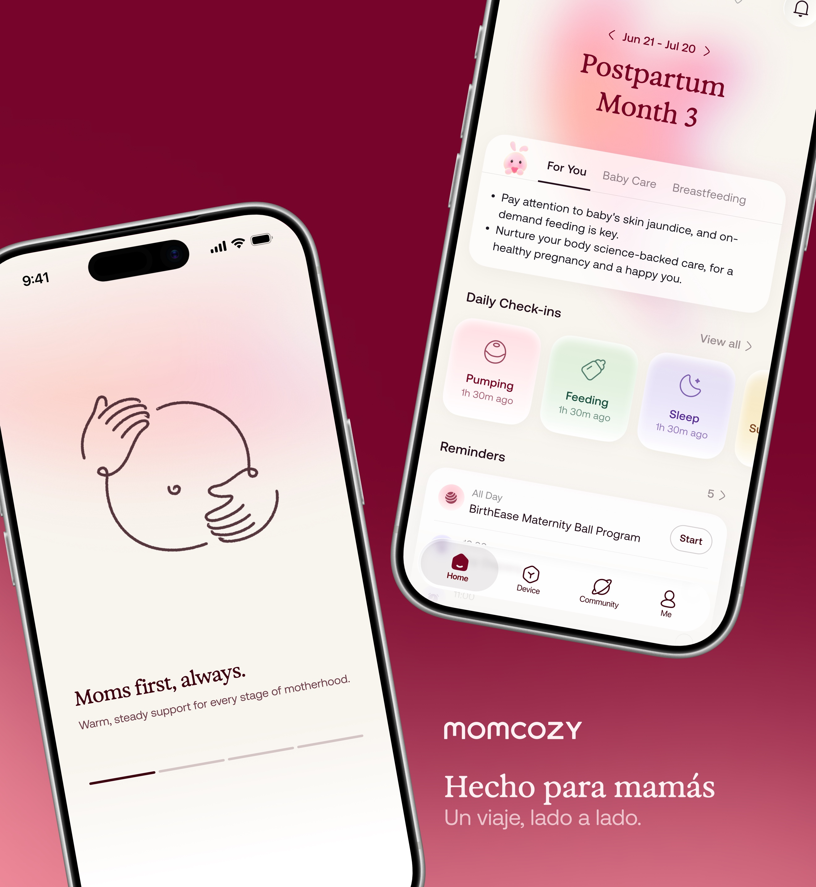
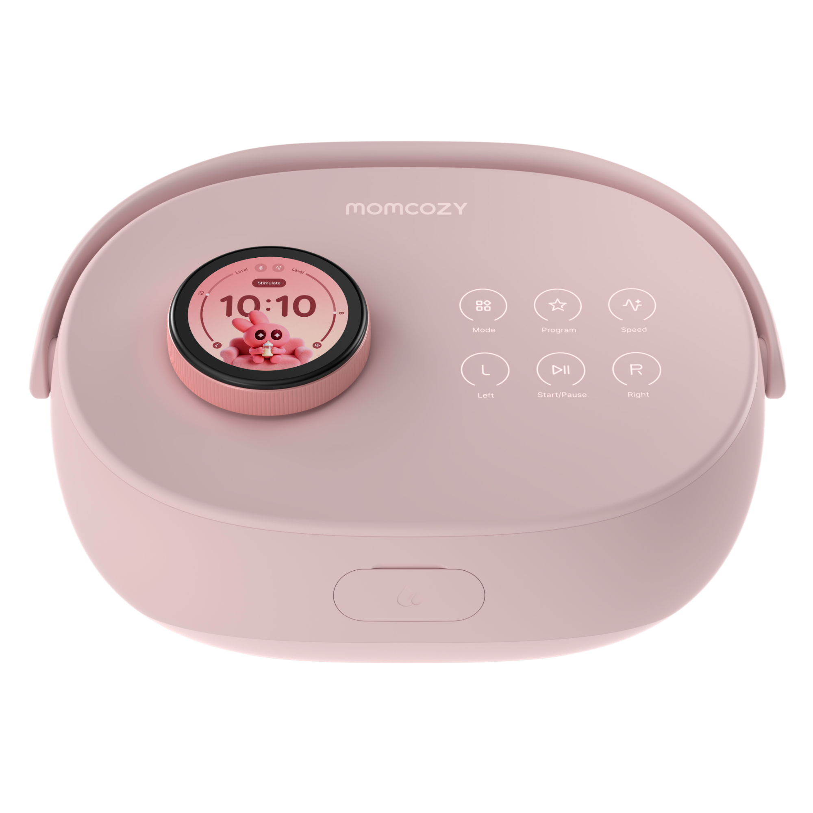
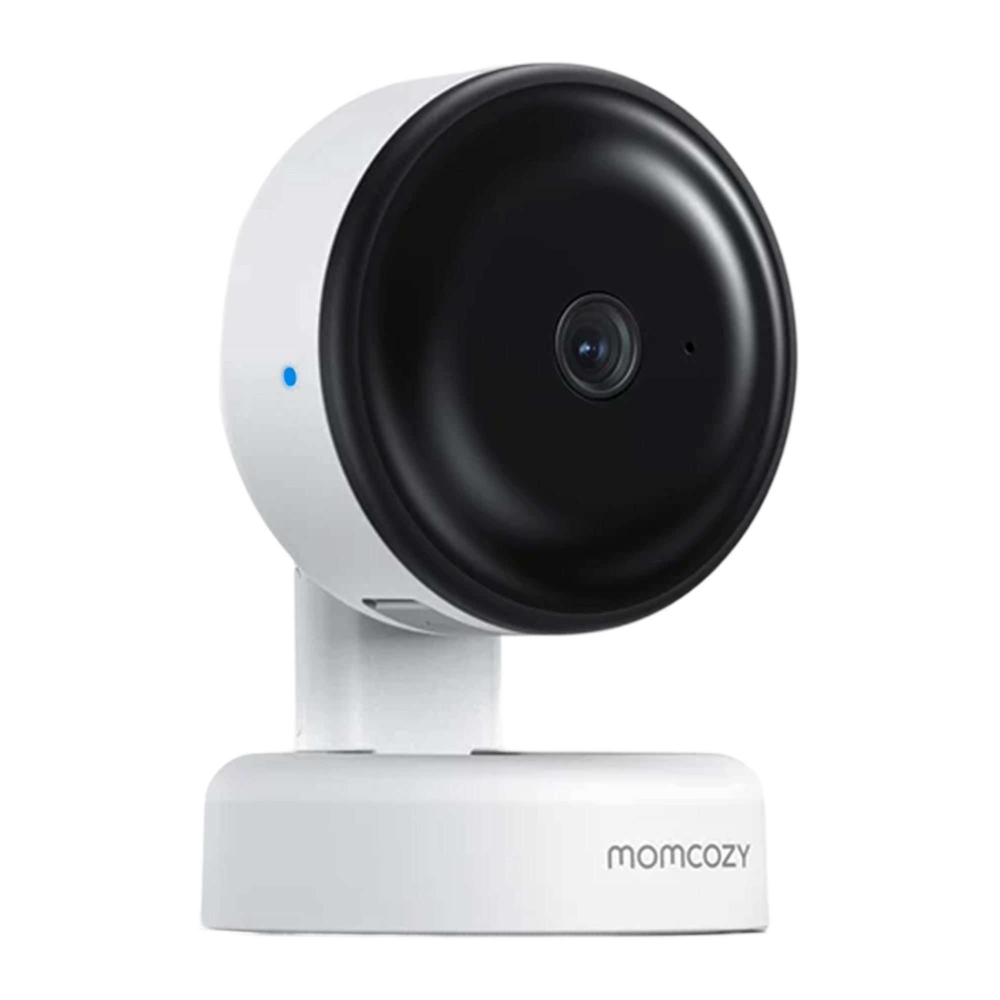
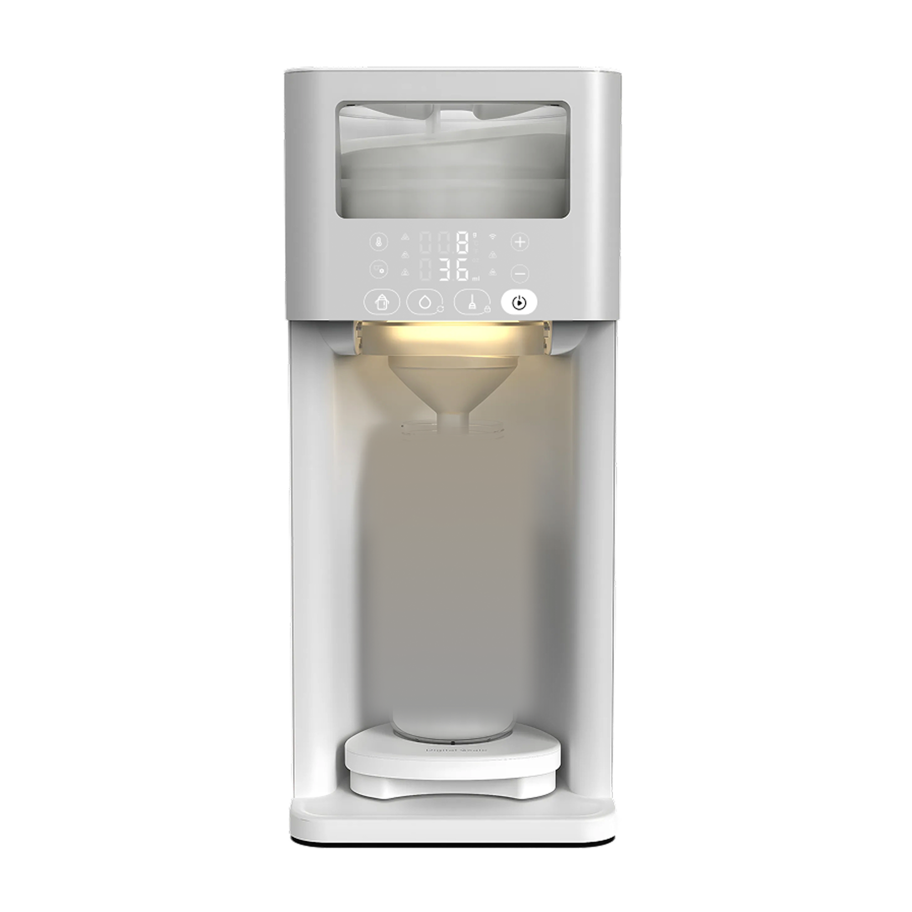
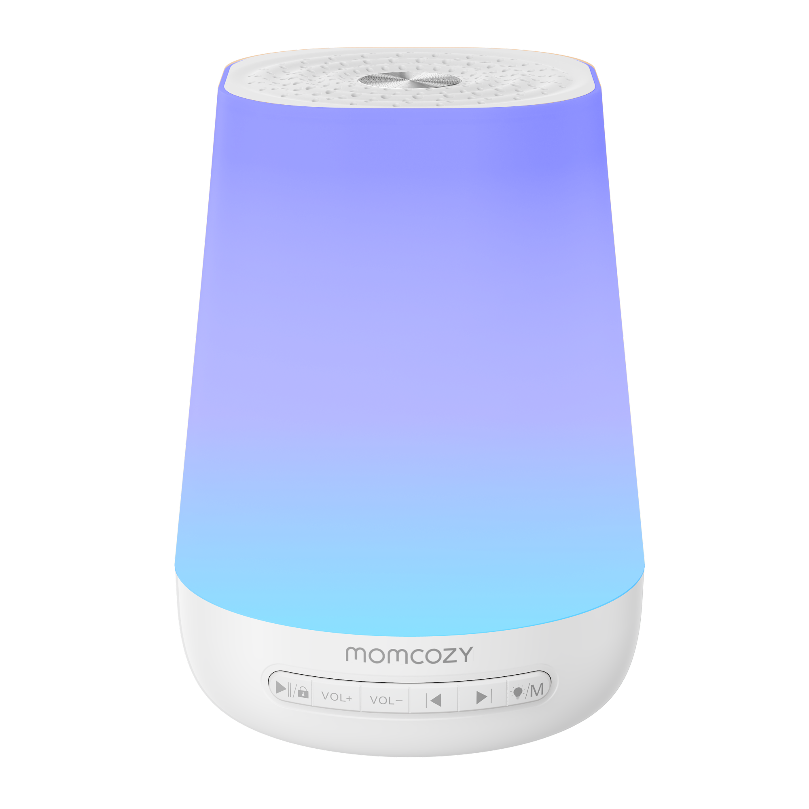
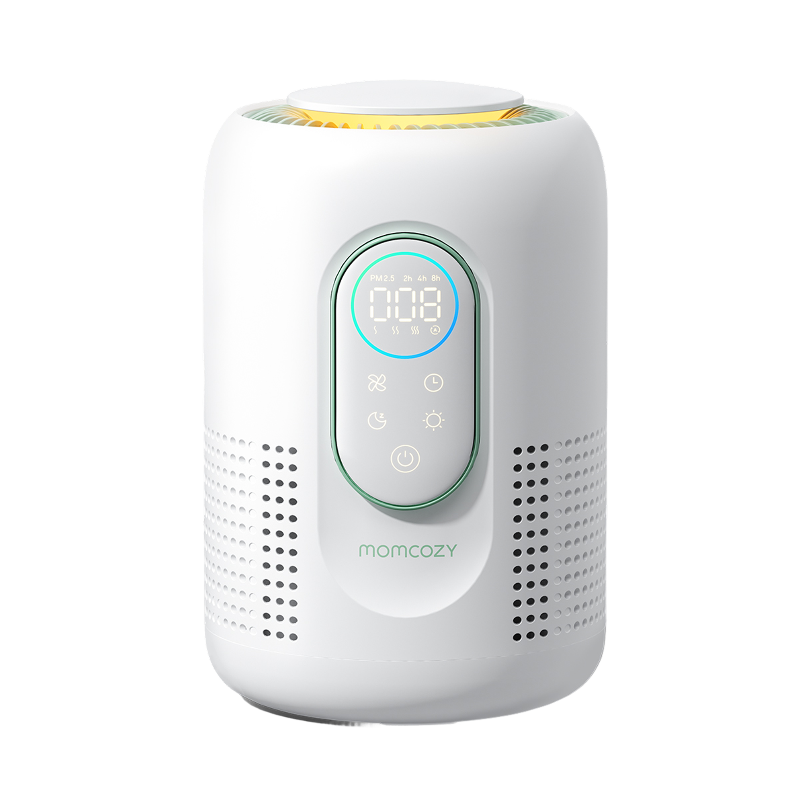
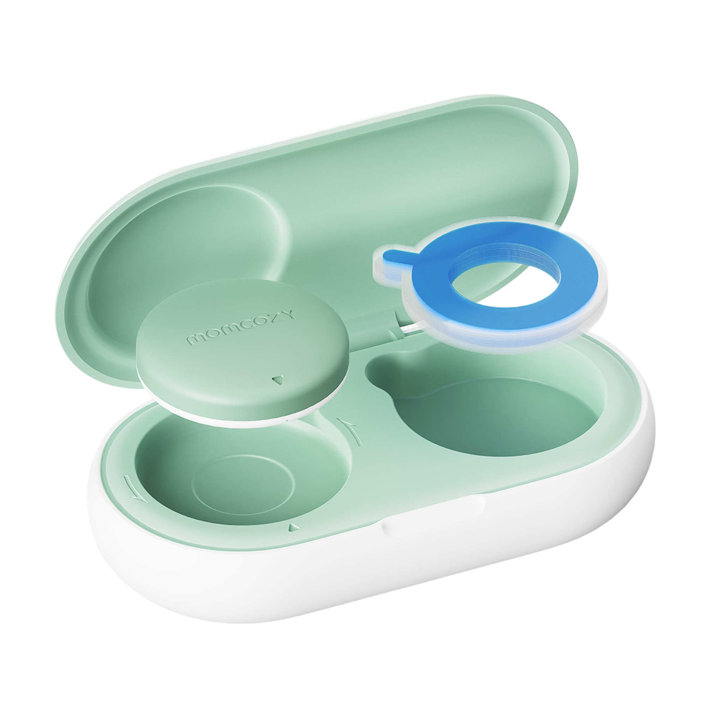
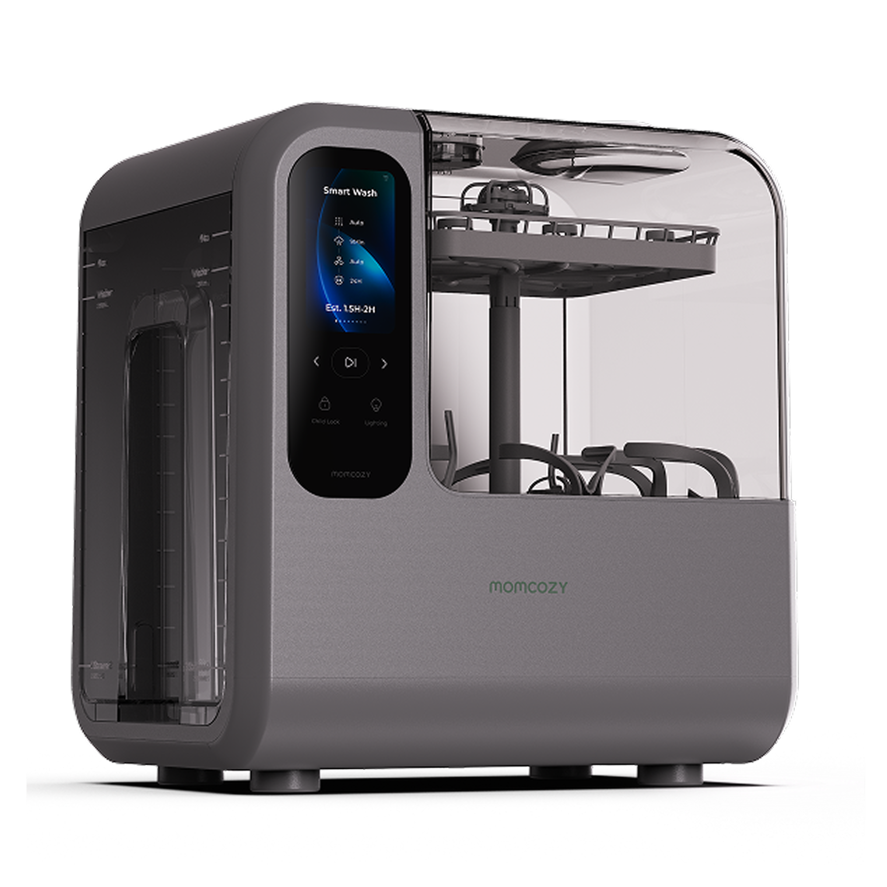
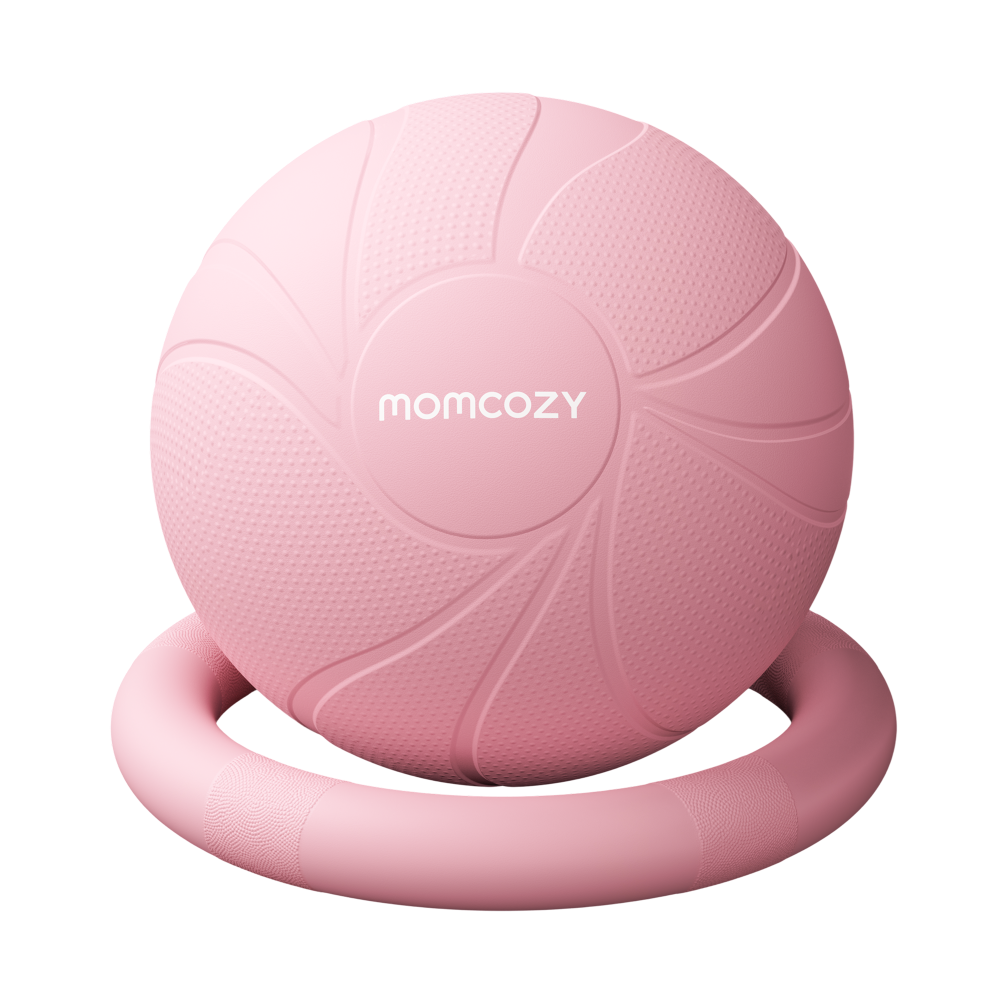

业务线深耕
让主线和 IoT 各自形成稳定主责，提升设计师对业务、用户、产品和技术边界的理解深度。
APP 生态设计组









每个阶段都聚焦三件事：
解决业务问题，沉淀体验标准
交付可衡量结果。
当前团队具备交互、视觉、IoT、品牌、IP、用户研究和 AI 设计探索等多元能力，也有熟悉业务历史、协作关系和存量问题的核心成员。
现阶段的关键问题不是能力不足，而是能力与业务位置的匹配度还不够高：主责与支援边界不清，专家能力没有充分进入关键业务，设计基线与日常交付之间尚未形成稳定闭环。
后续组织调整将从“按人分任务”转向“按业务经营能力”：让不同能力进入更适合的业务线，通过主线深耕、专家带教和基线共建，提升整体设计交付质量与团队成长效率。
注：具体成员负责方向可根据实际组织调整继续补充。此模块重点用于说明人员能力与组织调配逻辑。
当前团队不是单纯“人力不足”，而是需要解决“能力如何放到合适位置、经验如何被组织复用”的问题。
主线业务涉及 AI、社区、Journal、我的、用户增长、商业化、多语言等方向，变化快、探索多、体验定义不确定性高。
IoT 业务跨部门协作复杂、硬件约束强，需要业务连续性和高水平交互、视觉、全链路设计能力共同牵引。
Design Token、Component.md、Motion.md、Brand.md、IP、交付模板和验收标准，需要从主线和 IoT 项目中持续抽象沉淀。
专家进入业务线，不只是解决当前项目问题，更重要的是在项目过程中带教新人、提升团队判断力，并沉淀为规范、模板、组件、案例和 AI 工作流上下文。
从当前已盘点的核心成员看，团队约 10 人。若要稳定覆盖主线、AI、IoT、社区、品牌、运营和研究等方向，建议补充 8-10 人，形成约 18-20 人的配置。
按当前核心成员约 10 人估算，补齐 AI、动效、视觉、交互、运营和研究等专项能力后，可形成更稳定的 18-20 人配置。
试用期内，设计组织需要完成从“项目式设计交付”向“体系化设计管理”的初步转型。
总体目标是：稳定关键业务设计交付，建立设计协作机制，启动设计体系建设，提升团队专业能力，并为 AI + 母婴产品体验升级打下基础。
让主线和 IoT 各自形成稳定主责，提升设计师对业务、用户、产品和技术边界的理解深度。
让元老和专家进入业务线，不脱离业务、不集中扎堆，通过项目共创、评审、带教和复盘带动其他设计师能力提升。
通过 Design System 建设，把设计标准、设计质量、设计流程、品牌 / IP 规范和 AI 工作流上下文沉淀为组织资产。
优先保障 App 3.1、Journal、社区 Group、IoT、吸奶器、agency 时域融合版本 630、暗黑模式等重点项目设计推进。
将团队从原有个人多线承接方式，逐步调整为：主线业务 AI 制、IoT 业务项目制、设计基线 Design System。明确每条业务线的专家牵引、主责设计师和协同方式。
建立设计需求分级、设计排期、设计评审、设计交付、研发还原、上线验收和复盘机制。
围绕 agency 时域融合版本 630，推进底层系统与前台体验一致性建设，包括 Design Token、组件状态、暗黑模式、多端适配和交付标准。
围绕 AI 体验设计师、视觉设计专家、Motion 设计师、运营设计师、中高级产品设计师、用户研究人员等关键能力，明确补充节奏和岗位要求。
建立团队 1v1、设计评审圆桌、项目复盘和 AI 辅助设计工作流试点。
为实现目标，团队从“按人力分配”转向“按业务线作战”：主线采用 AI 试点制，IoT 采用项目制，社区和设计基线作为横向支撑。
用户增长 / 商业化 / 用户研究 / 多语言
睡眠看护 / 白噪音 / 婴童健康 / 孕产康 / 游戏
AI 卡片 - 琪琪；blue 泌乳计划 - 慧慧
睡眠 - 苗苗；周期 - 佳迪；AI tab - 郭嘉
提醒和日历 - 雪寒；记录方式 / 语音 - 佳迪；Journal / 我的定位与 MVP - 雪寒；内容推荐 - 军雄；电商 - 佳迪 / 赵小龙
一个版本需求大概率 2-3 条并发，需要持续迭代与补充 UX。
主 UX - 一鸣；副 UI - Jony
主 UX - 一鸣
主 UX - 王博；副 UI - Jony
主 UX - 王博
主 UX - 刘琼支援；后一鸣安排
主 UX - 东东；会补人
主 UX - 东东
主 UX - 燕欣
东玮 / 丹倩 / 韵雯
Jony / 刘琼 / Kenzie / 燕欣
俊杰 / 一鸣 / 东东 / 王博
UX 兼任
品牌 - 锦波；IP 家族 - 莹玉；用户增长 - 莹玉长线看；物料 - 锦波
基于当前网站内容，试用期核心不是单点项目交付，而是让设计组织稳定承接 App 主线、AI、社区、Journal、IoT、商业化、增长与 Design System 等复杂业务。
因此指标需要同时衡量业务交付质量、协同效率、体系沉淀、AI Native 工作方式、人力补位和资源投入有效性。
确认 P0/P1 业务优先级、试用期阶段成果和绩效口径。
与产品、运营、研发确认需求输入、排期节奏和上线验收标准。
确认关键岗位画像、补充节奏、面试优先级和团队能力结构。
承接人：各业务主责 UX；设计负责人负责节奏看护。
必要性：直接解决流程和排期不稳定问题，保障版本火车和重点项目不被设计侧阻塞。
结果反映：能反映资源排布、需求定义质量和跨团队协同效率。
承接人：设计负责人、视觉设计专家、交互设计专家、项目主责设计师。
必要性：用评审质量控制方案成熟度，减少反复修改和后期返工。
结果反映：能反映前置对齐、方案完整性、视觉与交互质量是否稳定。
承接人：App 主线、AI 首页、IoT、社区、Design System 各主责 UX。
必要性：设计价值必须落到上线体验，不只停留在设计稿交付。
结果反映：能反映研发还原、上线验收和体验质量闭环是否成立。
承接人：设计负责人；Kenzie、刘琼、俊杰、一鸣、王博、东东、燕欣等业务主责。
必要性：业务复杂度提升后，需要明确 owner，避免多线需求靠个人临时响应。
结果反映：能反映组织分工、业务理解深度和资源调度是否清晰。
承接人：设计负责人、业务 PM、项目主责 UX。
必要性：需求输入不稳定是当前核心问题，设计需要提前参与目标、边界和验证方式定义。
结果反映：能反映需求定义质量、风险前置能力和 Demo 验证机制是否有效。
承接人：Jony、刘琼、Kenzie、燕欣、俊杰、一鸣、东东、王博、锦波、莹玉。
必要性：设计系统缺失会导致体验不统一，必须把标准沉淀为可复用资产。
结果反映：能反映体验一致性、研发协作效率和组织资产沉淀能力。
承接人：AI 体验设计师、Kenzie、刘琼、俊杰；协同产品与研发。
必要性：团队需要从线性流程进入 AI Native 工作方式，用 Demo 快速验证体验和需求。
结果反映：能反映 AI 设计能力、产品探索效率和跨职能协同成熟度。
承接人：项目主责 UX、专家牵引人、设计负责人。
必要性：团队不能只靠个人经验，需要把案例、模板、组件和工作流沉淀下来。
结果反映：能反映学习型组织建设、专家带教和组织能力复用效果。
承接人：设计负责人、上级负责人、人力；重点岗位为 AI 体验、视觉专家、Motion、交互专家。
必要性：当前能力结构与业务复杂度不匹配，必须用人力规划支撑长期目标。
结果反映：能反映组织能力缺口识别、招聘优先级和团队结构调整是否可靠。
承接人：设计负责人、业务负责人、人力；涉及预算时同步财务。
必要性：关键项目不能边做边补人、补外包、补工具，启动前要先确认资源够不够。
结果反映：能看出重点项目是否有资源保障，团队投入是否和业务优先级一致。
围绕品牌、IP、独立站与软硬一体体验，承接更前置、更探索的设计任务；这条线不只做交付，更要把新方向跑通、形成共识，并让有探索精神和自驱力的设计师持续推进。
围绕版本交付、组件化、样板间和工程化协作，把设计质量从个人经验变成稳定流程、可复用资产和可验收标准，支撑重点项目持续落地。
保障下半年版本火车需求，高质、高效完成设计交付与体验落地。
通过系统性设计思维，打造稳定一致的体验设计框架；完成吸奶器样板间专项体验规划与交付落地，覆盖子首页、控制页、V3 圆屏等关键场景。
通过样板间和设计走查推动体验一致性，完成系统性设计语言、Design Token、组件化、Light/Dark Mode 等专项建设与维护。
迭代并落地 APP 品牌设计资产，覆盖周边、IP 家族、IP 资产动画等方向，为用户体验补充情绪价值。
围绕业务目标、组织分工、关键项目节奏继续校准，让 Workplan 从判断走向共识。
下一步聚焦App 3.1、agency 630、IoT 体验盘点与设计基线共建，用可交付成果验证组织价值。